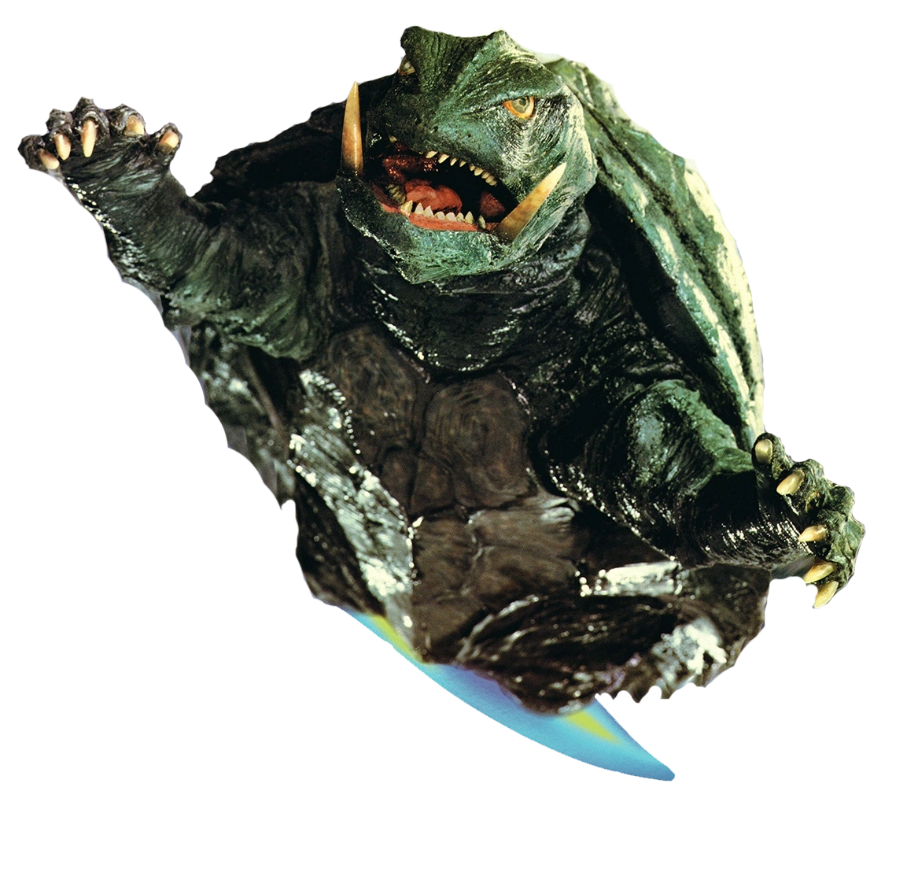
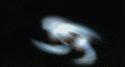
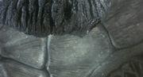

Información del Personaje
Origen:Atlantis
Altura: 55 metros
Peso: 80 toneladas
Alianza: "Aliado" (Solo confia en niños humanos)
Historia
Gamera es una entidad kaiju de origen antiguo, presumiblemente creado por una civilización avanzada como arma de defensa planetaria. A lo largo de la historia moderna, ha demostrado una inclinación protectora hacia la humanidad, especialmente en la defensa contra amenazas kaiju hostiles. Sin embargo, su nivel de interacción y respuesta depende de la percepción de peligro para la vida en la Tierra, lo que lo convierte en un aliado de valor incalculable pero impredecible.
El comportamiento de Gamera sugiere una fuerte conexión con la humanidad, particularmente con los niños. Sus acciones indican que prioriza la protección de los más vulnerables, llegando a ignorar su propia seguridad para asegurar su supervivencia. Esto ha generado una relación de respeto entre la WKDF y el guardián, aunque también preocupa la posibilidad de que su empatía pueda ser manipulada o utilizada en su contra.
Gamera es una fuerza de protección invaluable para la humanidad, pero su empatía puede ser tanto su mayor fortaleza como su mayor debilidad. La WKDF debe mantener una relación diplomática con él, asegurando que su rol de guardián se mantenga en beneficio de la humanidad. Aunque su lealtad no esté garantizada, su sacrificio por los inocentes sigue siendo un factor clave en su consideración como aliado estratégico.
Protocolos de Interacción
1.Evitar confrontación directa: Gamera no representa una amenaza a menos que se le perciba como enemigo.
2.Monitoreo constante: Seguir su patrullaje y prever su aparición en zonas de conflicto.
3.Colaboración en emergencias: Facilitar su acción cuando una amenaza kaiju requiera intervención.
4.Protección de civiles, en especial menores: Se deben evitar situaciones que pongan en peligro a niños, ya que podrían afectar la toma de decisiones de Gamera.
Imagen del Sujeto
Habilidades
Aliento de fuego
Gamera puede exhalar chorros de llamas intensamente calientes por la boca cuando se encuentra en una situación peligrosa. Esto se llama Chorro de Llamas. También puede disparar bolas de fuego de plasma explosivas por la boca, generalmente con gran rapidez y precisión variable.
Caparazon volador
El caparazón de Gamera es extremadamente resistente y fuerte. Los misiles y otras armas simplemente rebotan en él, al igual que la mayoría de los ataques de sus oponentes. Gamera también tiene la capacidad de volar. Generalmente, Gamera retrae sus brazos, piernas, cabeza y cola dentro de su caparazón, lanza llamas por las cavidades de sus brazos y piernas y gira como un frisbee. Este estilo de vuelo se conoce como jets giratorios.
Puas de codo
Resulta que Gamera tiene un arma secreta: un par de púas afiladas que sobresalen de sus codos que usa para apuñalar a sus enemigos como ultimo recurso.
Videos de Metraje Encontrado
Video de Evidencia 1: Gamera vs Gyaos
Video de Evidencia 2: Gamera vs Legion
Video de Evidencia 3: Gamera vs Jiger
Video de Evidencia 4:Gamera vs Guiron